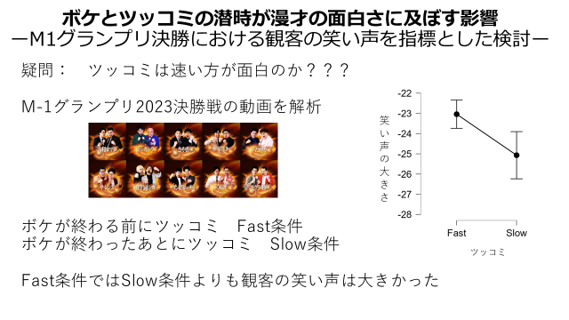
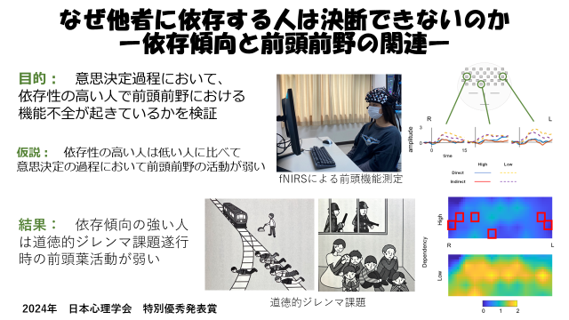

当研究室では，各自で自由にテーマを設定し，卒業論文・卒業レポートに取り組んでいただきます。教員は脳を対象とした研究を行っていますが，ゼミ生が指導教員の領域に沿った研究を行う必要はありません。科学的なアプローチであれば何でも（心理学以外でも）かまいません。学術的興味に限らず，普段日常で感じていることをいかに科学に落とし込むかを重視しています。
学生さんへの要望があるとすれば，卒業する気のある人に来ていただきたい。そのぐらいです。
2025年度
絵師におけるイラストの描き方と推定される性格特性の関係
VTuberオタクにとってVTuberの魅力はどこにあるのか
推しロスと自尊感情
フィクション作品におけるキャラクターの死の受容
自己開示、承認欲求及び幸福度の関連
好きな友人から方言はよく伝染る
かわいいとかっこいいへの好みと性格の関連
名言への評価はイラストの存在に依存するのか？
女性性と男性性の独立性に関して
音楽の好みと外向性の関係性
2024年度
PickUp ボケとツッコミの潜時が漫才の面白さに及ぼす影響
ーM1グランプリ決勝における観客の笑い声を指標とした検討ー

関西人はおもろないと言われると傷つくのか
戦隊ヒーロにおける色依存効果に関して
キュートアグレッションとDVの関係
J-popにおけるコード進行における転調の効果
すいませんよりもありがとうと言われたい
ファッションにおけるA，O，I，Yスタイルが印象形成に及ぼす影響
なぜ死刑を容認するのか
感情制御における下位方略の検討
運動すると精神的に健康なる
緑は気分改善効果をもつか
報酬遅延割引傾向と友人関係の関連
アルツハイマー病発症予測におけるCox回帰分析
マインドワンダリング傾向の規定要因に関して
蛙化に関して
救命活動におけるためらいの要因
2023年度
人間歌唱とボーカロイド歌唱での印象の違い
作曲者は音楽を通して意図した感情を聴き手に伝えることはできるのか
音色の違いが聴き手の印象に及ぼす影響
「かわいい」の印象における文字表記と世代の影響
かわいいトライアングルの実験的検証
PickUp なぜ他者に依存する人は決断できないのか ―依存傾向と前頭前野の関連―
（2024年の日本心理学会大会でポスター発表，特別優秀発表賞を授賞）

SNSのアイコンのタイプが性格推定に及ぼす影響
SNSの利用時間が仮想的有能感に与える影響
日本人のチップ支払いにおける丸型価格の選好
視覚的な温度の変化による対人温情への影響
ペットの飼育経験が向社会的行動・抑うつに与える影響
幼少期の愛着スタイルが青年期の向上心に及ぼす影響
幼少期の頃の親への愛着と、青年期における親、友人との心理的距離の関連について
2022年度卒業生
色の見え方の個人差について
見慣れた顔における2次構成情報の役割と個々の顔認識能力
お菓子の記憶について
顔の左右の印象の違いを様々な条件で考える
ブーバキキ効果における子音と母音の影響について
見慣れた顔における2次構成情報の役割と個々の顔認識能力
ピアスが印象評価に及ぼす影響
ヘルシー及びジャンキーな食品の選択における知覚的優位性の影響
2021年度卒業生
感情認識と感情制御の連関
大学生における摂食障害傾向と食物に関する認知の関連
かわいい動画の視聴が課題への動機づけに及ぼす影響